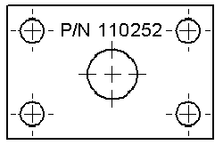

Text command
Use the Text command  to place a text box or a text string on a 3d part or a drawing in a Draft document, a Part sketch, an Assembly, or a Sheet Metal sketch.
to place a text box or a text string on a 3d part or a drawing in a Draft document, a Part sketch, an Assembly, or a Sheet Metal sketch.

Text box editing handles
If you click and drag to draw the text box initially, then the box is defined as a fixed-width text box. You can adjust the text box size interactively using the handles displayed when you select the text box.

If you click and type to begin entering content, then the text box is defined as Fit width to contents. This means that the text box changes size as the content changes. Sizing handles are not displayed on the text box when you select it. To make it easier to read and format the text as you create it, you may want to switch to one of the following options, which you can select from the Text Control list on the Text command bar:
-
Fixed—Adjust Aspect Ratio
-
Fixed—Wrap Text.
Text formatting options
When typing or editing text, you can use the Stack dialog box and the AutoStack dialog box to format fractions, superscript, and subscript text.
Some text formatting options are available only when the cursor is inside the text box. For example, you cannot stack text, apply bullets, or insert symbols until you click inside the text box.

You can apply other text formatting options, such as boldface, italics, and underline, when the text box border is selected and the edit handles are displayed.
When showing a border around the text box, you can adjust the spacing between the border and the text using the Indentation options on the Indents and Spacing tab of the Text Box Properties dialog box.
You can create a list and choose a bullet style using the options on the Text command bar and the Bullets and Numbering tab of the Text Box Properties dialog box.
Editing associative text
A text box may contain a combination of plain text and associative text that was inserted as property text, reference text, and symbol codes. To locate a property text string for editing. you can use the Show Property Text Code command on the text box shortcut menu. This displays all of the property strings in the text box. You can edit a specific string by double-clicking it.
You can use the Format Values dialog box to apply formatting to the resolved value of a property text string. For more information, see the help topic, Format property text values.
Locating empty text boxes
When a text box exists but does not contain text, the empty text box indicator is displayed on the sheet. This makes it possible to locate and delete empty text boxes.
The empty text box symbol does not print.
-
You can control the display of the empty text box symbol using the option, Show empty callouts and text boxes, on the General tab in the Solid Edge Options dialog box.
-
In the Draft environment, the default symbol color is derived from the Disabled element color on the Colors tab in the Solid Edge Options dialog box.
How do I
Place a text box or text stringCreate a text box that references another annotation
Edit associative text in a text box
Insert a font character into a text box
Set text annotations parallel to the screen
Learn more
Engineering fontsLook up more details
Text command bar (or Watermark command bar)Stack dialog box
AutoStack dialog box
Text Box Properties (or Watermark Properties) dialog box
Info tab
Paragraph tab
Border and Fill tab
Indents and Spacing tab
Bullets and Numbering tab
Character Map command
Character Map dialog box